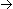

Finds the modes (most common values) or estimated modes (most common range centers) of the input sequence X. This VI can perform unimodal or multimodal analysis. You must manually select the polymorphic instance to use.
X must contain at least one sample. If X is empty, the Mode VI sets mode to NaN.
If the input sequence has a constant value, the Mode VI ignores the number of intervals and sets mode to the constant value in the input sequence:
if X = a  mode = a
intervals specifies the number of histograms to use when computing estimated modes. The default is 100. To find estimated modes, set intervals to a positive number of histogram bins so that the VI uses a histogram algorithm to return the best estimated mode of the input sequence. For intervals less than or equal to 0, the VI returns only the exact mode(s) of the input sequence. For intervals greater than 0, the VI uses a histogram to divide the input sequence X into bins, or intervals, and returns the center value (unimodal instance) or values (multimodal instance) of the bin that contains the most values from the input sequence. These estimated modes are generally more useful than the exact modes in real-world applications, where the data sequence contains even a small amount of noise.
mode returns the mode or estimated mode of X.
error returns any error or warning from the VI. You can wire error to the Error Cluster From Error Code VI to convert the error code or warning into an error cluster.
X must contain at least one sample. If X is empty, the Mode VI sets Modes to an empty array.
If the input sequence has a constant value, the Mode VI ignores the number of intervals and sets mode to the constant value in the input sequence:
if X = a mode = a
intervals specifies the number of histograms to use when computing estimated modes. The default is 100. To find estimated modes, set intervals to a positive number of histogram bins so that the VI uses a histogram algorithm to return the best estimated mode of the input sequence. For intervals less than or equal to 0, the VI returns only the exact mode(s) of the input sequence. For intervals greater than 0, the VI uses a histogram to divide the input sequence X into bins, or intervals, and returns the center value (unimodal instance) or values (multimodal instance) of the bin that contains the most values from the input sequence. These estimated modes are generally more useful than the exact modes in real-world applications, where the data sequence contains even a small amount of noise.
Modes returns the modes found in X.
error returns any error or warning from the VI. You can wire error to the Error Cluster From Error Code VI to convert the error code or warning into an error cluster.
Select the Unimodal instance if you are sure that the input sequence X is unimodal or you expect one scalar mode result. Select the Multimodal instance if you expect an array of modes. If the VI does not find a mode, the Unimodal instance returns NaN without error and the Multimodal instance returns an empty array without error.
As defined in statistics, mode is the most frequently occurring value in a sequence of numbers. For example, for the data set (3, 7, 3, 9, 9, 3, 5, 1, 8, 5), the unique mode is 3. Similarly, for the data set (2, 4, 9, 6, 4, 6, 6, 2, 8, 2), two modes exist: 2 and 6. A distribution with a single mode is unimodal. A distribution with more than one mode is multimodal.
If you use the input sequence X = {0, 1, 3, 3, 4, 4, 4, 5, 5, 7} and set intervals to 1, the Mode VI calculates mode as 3.5 because 3.5 is the center value of the one interval intervals specifies. If you use the same input sequence for X and set intervals to 0, the Mode VI returns the exact mode 4.
Refer to the Histogram VI for more information about histograms.
 Add to the block diagram
Add to the block diagram Find on the palette
Find on the palette